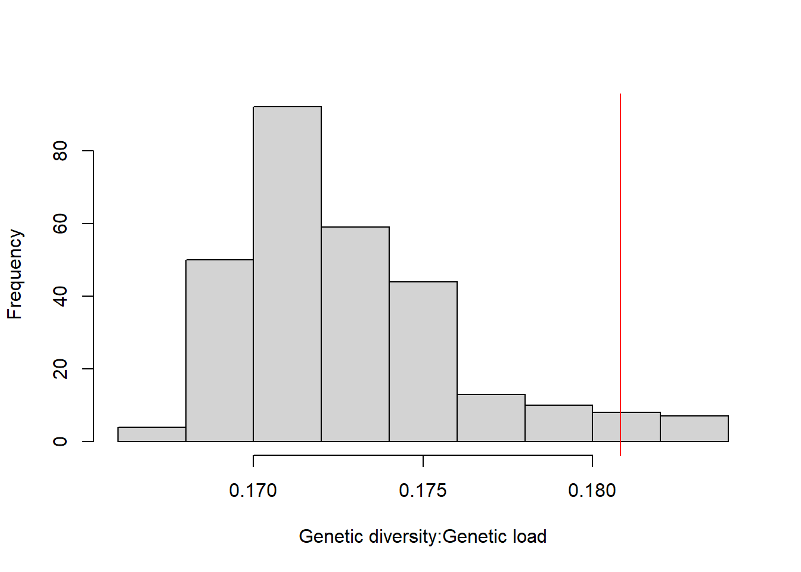
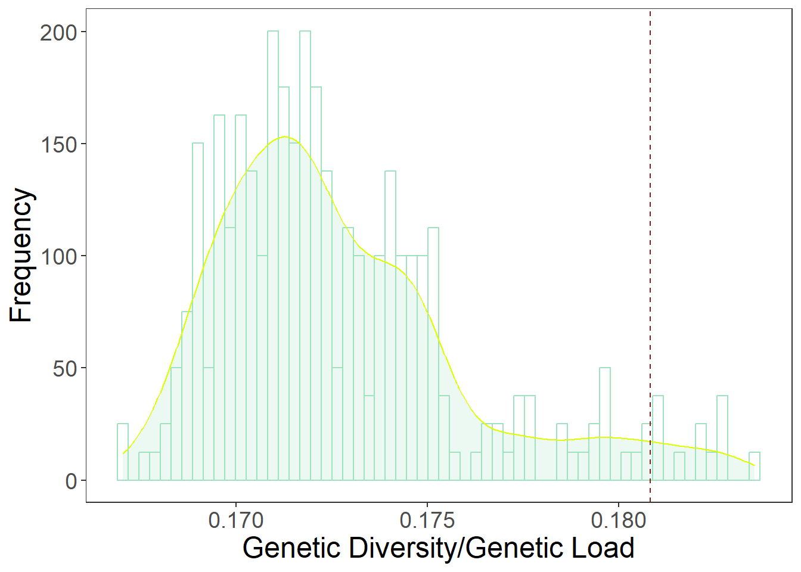

list <- list.files(path = "../../datashare/Spruce/exome_capture/WES_mapping/Annotations/ref_Pglauca/VCF_split_files",
pattern = "Red_Spruce_intersect_poly_",
recursive=TRUE, full.names = T)
# genes <- lapply(list[1], function(x) read.table(x, nrow = 100000)) # originally run for testing
genes <- lapply(list[1], function(x) read.table(x))
category <- lapply(genes, function(x) unlist(lapply(strsplit(as.character(x[,8]), split = "|", fixed = T), function(y) y[2])))
TAB <- genes[1:2]
TAB <- do.call(rbind, TAB)
category <- do.call(c, category)2 Genomic selection of sources
2.1 Setting up
Read in the necessary data for the source optimization. SnpEff v5.1 (Cingolani et al. (2012)) was used to annotate genetic variants to functional class based on Norway spruce genome annotation.
2.1.1 Import annotations from SnpEff
Read in the meta data for the samples
# Info samples
names <- unlist(lapply(strsplit(unlist(strsplit(as.character(read.table("all_bam.list")[,1]), split = "_rmdup.sorted.bam")), split = "./"), function(x) x[2]))
pops <- unlist(lapply(strsplit(names, split="_"), function(x) x[1]))
info_inds <- read.table("./Info_samples_revised.txt", header=T)
info_inds <- info_inds[match(as.character(names), as.character(info_inds$Family)),]
info_pops <- info_inds[!duplicated(info_inds$Site),-c(1,3,9,10)]2.1.2 Allele probabilities and frequencies
# Read depth
depth <- apply(TAB[,-c(1:9)], 2, function(x) as.integer(unlist(lapply(strsplit(as.character(x), split = ":"), function(y) y[2]))))
# Genotype probabilities, changed by NA for the uncovered sites
gen_prob <- apply(TAB[,-c(1:9)], 2, function(x) unlist(lapply(strsplit(as.character(x), split = ":"), function(y) y[4])))
gen_prob[which(depth==0)] <- NA
# Proba alternative allele
altern_proba <- apply(gen_prob, 2, function(x) (as.numeric(unlist(lapply(strsplit(as.character(x), split = ","), function(y) y[2])))+2*as.numeric(unlist(lapply(strsplit(as.character(x), split = ","), function(z) z[3]))))/2)
# Frequency of the alternative allele for each locus and population
TAB_pop <- lapply(unique(pops),function(x) altern_proba[,which(pops==x)])
names(TAB_pop) <- unique(pops)
freq_pop <- lapply(TAB_pop, function(x) apply(x, 1, function(y) sum(y, na.rm = T)/sum(!is.na(y))))2.2 Functions to optimize selection
2.2.1 Select regions to select sources
Based on the idea of Regional admixture provenancing (Bucharova et al. (2019)), seed sources were selected regionally for each restoration site. Three groups of source populations were subsetted for the three planting sites, removing XVC and HR because of their northern ancestry. More info on the regional ancestry detailed in Capblancq et al. (2020).
# Sources considered for the Maryland restoration site
TAB_pop_maryland <- TAB_pop[which(names(TAB_pop)%in%info_pops$Site[which(info_pops$Region=="E" & !info_pops$State%in%c("NC","TN") & !info_pops$Site%in%c("XCV","HR"))])]
# Sources considered for the West Virginia restoration site
TAB_pop_westvirginia <- TAB_pop[which(names(TAB_pop)%in%info_pops$Site[which(info_pops$Region=="E" & info_pops$State=="WV" & !info_pops$Site%in%c("XCV","HR"))])]
# Sources considered for the Virginia restoration site
TAB_pop_virginia <- TAB_pop[which(names(TAB_pop)%in%info_pops$Site[which(info_pops$Region=="E" & (info_pops$State=="WV" & !info_pops$Site%in%c("XCV") | info_pops$Site%in%c("GMF","CR","DG","RP")))])] # remove HR and CV for the paper2.2.2 Different fucntions applied for source selection
# function to estimate allelic richness after rarefaction
rarefy_AR <- function(data, g, bootstraping=100){
Nijg <- list()
Njg <- g*2
nbind <- ncol(data)
Nij <- list()
for(boot in 1:bootstraping){
inds <- sample(1:nbind, g, replace = FALSE)
if(g==1){
Nij[[boot]] <- data[,inds]*2}
if(g>1){
Nij[[boot]] <- apply(data[,inds], 1, function(x) sum(x, na.rm = T)/sum(!is.na(x)))*g*2}
}
Nijg <- rowMeans(do.call(cbind, Nij), na.rm = T)
Qijg <- (Njg-Nijg)/Njg
Pijg <- 1-Qijg
return(Pijg)
}The following function is used to estiamte the ratio of nonsynonymous/synonymous mutation based on the annotation from SnpEff v5.1 (Cingolani et al. (2012)), which was used to annotate genetic variants to functional class based on Norway spruce genome annotation. The functional categories viz. missense variant, splice acceptor variant, splice donor variant, splice region variant, start lost, stop gained, stop lost were used to designate as non-synonymous mutation in our calculation for genetic load.
genetic_load <- function(data, category){
nonsyn_sites <- which(category=="missense_variant" | category=="splice_acceptor_variant" | category=="splice_donor_variant" | category=="splice_region_variant" | category=="start_lost" | category=="stop_gained" | category=="stop_lost")
freq_nonsyn <- mean(data[nonsyn_sites], na.rm = T)
freq_syn <- mean(data[-nonsyn_sites], na.rm = T)
ratio_2 <- freq_nonsyn/freq_syn
return(ratio_2)
}This function combines the rarefy_AR and genetic_load function to estimate expected heterozygosity (Hexp), allelic richness and genetic load in all combinations of P populations. The P depends on the number of sources one decides to select for their restoration site.
# function to estimate Hexp, Allelic Richness and Genetic Load in all combination of P populations
optimize <- function(data, P){
# Total diversity and load with all the populations
TAB_tot <- do.call(cbind,data)
freq_tot <- apply(TAB_tot, 1, function(y) sum(y, na.rm = T)/sum(!is.na(y)))
hexp_tot <- mean(2*freq_tot*(1-freq_tot), na.rm = T)
#all_rich_tot <- mean(rarefy_AR(TAB_tot, ncol(TAB_tot)), na.rm = T)
genetic_load_tot <- genetic_load(TAB_tot, category)
# Genetic diversity and load with only a subset of P populations
hexp_sub <- list()
genetic_load_sub <- list()
names <- list()
comb <- combn(1:length(data), P, simplify = F)
for(i in 1:length(comb)){
TAB_sub <- do.call(cbind, data[comb[[i]]])
freq_sub <- apply(TAB_sub, 1, function(y) sum(y, na.rm = T)/sum(!is.na(y)))
hexp_sub[i] <- mean(2*freq_sub*(1-freq_sub), na.rm = T)
genetic_load_sub[i] <- genetic_load(TAB_sub, category)
names[i] <- paste(names(data[comb[[i]]]), collapse="_")
}
TAB_sub <- do.call(rbind, lapply(1:length(hexp_sub), function(x) c(Hexp = hexp_sub[[x]], GenLoad = genetic_load_sub[[x]]))) #AllRich = all_rich_sub[[x]],
TAB <- rbind(c(Hexp = hexp_tot, GenLoad = genetic_load_tot), TAB_sub) #AllRich = all_rich_tot,
rownames(TAB) <- c("total", unlist(names))
return(TAB)
}2.2.3 Apply the function to get optimal source combinations
# Optimization sources for site in Maryland
res_maryland <- optimize(TAB_pop_maryland, 3)
which.max(res_maryland[-1,1]/res_maryland[-1,2])
res_maryland[c(1,which.max(res_maryland[-1,1]/res_maryland[-1,2])+1),]
# Optimization sources for site in West Virginia
res_westvirginia_4 <- optimize(TAB_pop_westvirginia, 4)
which.max(res_westvirginia_4[-1,1]/res_westvirginia_4[-1,2])
# Optimization sources for site in Virginia
res_virginia_4 <- optimize(TAB_pop_virginia, 4)
which.max(res_virginia_4[-1,1]/res_virginia_4[-1,2])2.3 Source list
Even though the optimal source combinations are obtained from the optimize function for each site. Its just a list of recommendations for the restoration practitioners to select from. The final source combination selected depends on the seed availability during the year of procurement.
2.3.1 Plotting with base R
## MD
DT::datatable(res_maryland,options = list(pageLength = 5, dom = 'tip'))hist(res_maryland[,3], xlab="Genetic diversity:Genetic load",main="")
res_maryland["XCS_XDS_XPK",3] [1] 0.1808131abline(v=0.1808131, col="red")
## WV
DT::datatable(res_westvirginia_4,options = list(pageLength = 5, dom = 'tip'))hist(res_westvirginia_4[,3], xlab="Genetic diversity:Genetic load",main="")
res_westvirginia_4["XCS_XDS_XPK_XSK",3] [1] 0.1826622abline(v=0.1826622, col="red")## VA
DT::datatable(res_virginia_4,options = list(pageLength = 5, dom = 'tip'))hist(res_virginia_4[,3], xlab="Genetic diversity:Genetic load",main="")
res_virginia_4["BFA_KOS_XDS_XPK",3] [1] 0.1758529abline(v=0.1758529, col="red")2.3.2 Plotting with ggplot2
require(ggplot2)
require(dplyr)
# Maryland final
MD_data <- as.data.frame(res_maryland[,1]/res_maryland[,2])
colnames(MD_data)[1] <- "GD_GL"
MD_data$Sources <- rownames(MD_data)
rownames(MD_data) <- NULL
MD_data <- MD_data[-1,]
MD_plot <- ggplot(MD_data, aes(x=GD_GL)) +
geom_histogram(aes(y=..density..),color="#9FE2BF",fill="white", position="dodge", bins=60)+
geom_density(alpha=.2, fill="#9FE2BF", color="#DFFF00") +
geom_vline(aes(xintercept=res_maryland["XCS_XDS_XPK",1]/res_maryland["XCS_XDS_XPK",2]),
linetype="dashed", color="#7B241C")+
theme(legend.position="top")
plot1 <- MD_plot + scale_color_brewer(palette="Dark2") +
theme_minimal()+theme_classic()+theme(legend.position="top") +
ylab("Frequency") + xlab("Genetic Diversity/Genetic Load") +
theme_bw(base_size = 11, base_family = "Times") +
theme(axis.text=element_text(size=14),
axis.title=element_text(size=18),
panel.background = element_blank(),
legend.background = element_blank(),
panel.grid = element_blank(),
plot.background = element_blank(),
legend.text=element_text(size=rel(.8)),
strip.text = element_text(size=30),
legend.position = "none")
plot1
# West Virginia
WV_data <- as.data.frame(res_westvirginia_4[,1]/res_westvirginia_4[,2])
colnames(WV_data)[1] <- "GD_GL"
WV_data$Sources <- rownames(WV_data)
rownames(WV_data) <- NULL
WV_data <- WV_data[-1,]
WV_plot <- ggplot(WV_data, aes(x=GD_GL)) +
geom_histogram(aes(y=..density..),color="#FF7F50",fill="white", position="dodge", bins=60)+
geom_density(alpha=.2, fill="#FF7F50", color="#FFBF00") +
geom_vline(aes(xintercept=res_westvirginia_4["XCS_XDS_XPK_XSK",1]/res_westvirginia_4["XCS_XDS_XPK_XSK",2]),
linetype="dashed", color="#7B241C")+
theme(legend.position="top")
plot2 <- WV_plot + scale_color_brewer(palette="Dark2") +
theme_minimal()+theme_classic()+theme(legend.position="top") +
ylab("Frequency") + xlab("Genetic Diversity/Genetic Load") +
theme_bw(base_size = 11, base_family = "Times") +
theme(axis.text=element_text(size=14),
axis.title=element_text(size=18),
panel.background = element_blank(),
legend.background = element_blank(),
panel.grid = element_blank(),
plot.background = element_blank(),
legend.text=element_text(size=rel(.8)),
strip.text = element_text(size=30),
legend.position = "none")
plot2# Virginia
VA_data <- as.data.frame(res_virginia_4[,1]/res_virginia_4[,2])
colnames(VA_data)[1] <- "GD_GL"
VA_data$Sources <- rownames(VA_data)
rownames(VA_data) <- NULL
VA_data <- VA_data[-1,]
VA_plot <- ggplot(VA_data, aes(x=GD_GL)) +
geom_histogram(aes(y=..density..),color="#CCCCFF",fill="white", position="dodge", bins=60)+
geom_density(alpha=.2, fill="#CCCCFF", color="#6495ED") +
geom_vline(aes(xintercept=res_virginia_4["BFA_KOS_XDS_XPK",1]/res_virginia_4["BFA_KOS_XDS_XPK",2]),
linetype="dashed", color="#7B241C")+
theme(legend.position="top")
plot3 <- VA_plot + scale_color_brewer(palette="Dark2") +
theme_minimal()+theme_classic()+theme(legend.position="top") +
ylab("Frequency") + xlab("Genetic Diversity/Genetic Load") +
theme_bw(base_size = 11, base_family = "Times") +
theme(axis.text=element_text(size=14),
axis.title=element_text(size=18),
panel.background = element_blank(),
legend.background = element_blank(),
panel.grid = element_blank(),
plot.background = element_blank(),
legend.text=element_text(size=rel(.8)),
strip.text = element_text(size=30),
legend.position = "none")
plot3# save data for further analysis
MD_reg_GDGL <- as.data.frame(res_maryland)
MD_reg_GDGL$GDGL <- MD_reg_GDGL$Hexp/MD_reg_GDGL$GenLoad
WV_reg_GDGL <- as.data.frame(res_westvirginia_4)
WV_reg_GDGL$GDGL <- WV_reg_GDGL$Hexp/WV_reg_GDGL$GenLoad
VA_reg_GDGL <- as.data.frame(res_virginia_4)
VA_reg_GDGL$GDGL <- VA_reg_GDGL$Hexp/VA_reg_GDGL$GenLoad
GDGL_list <- list()
GDGL_list[[1]] <- MD_reg_GDGL
GDGL_list[[2]] <- WV_reg_GDGL
GDGL_list[[3]] <- VA_reg_GDGL
names(GDGL_list) <- c("Maryland_GDGL","West_Virginia_GDGL","Virginia_GDGL")
# saveRDS(GDGL_list, "./OUTPUT/Genetic_diversity_and_Genetic_load/GDGL_list")
# convert to long data
MD_data2 <- MD_data
MD_data2$Plot <- "Maryland"
WV_data2 <- WV_data
WV_data2$Plot <- "West Virginia"
VA_data2 <- VA_data
VA_data2$Plot <- "Virginia"
GDGL_long_dat <- rbind(MD_data2,WV_data2,VA_data2)
GDGL_long_dat$Plot <- factor(GDGL_long_dat$Plot,levels=c("Maryland","West Virginia","Virginia"))# figure dim: png(2000h,769w), pdf(7h,18w)
GDGL_plot <- ggplot(GDGL_long_dat, aes(x=GD_GL,color=Plot,fill=Plot)) + facet_wrap(~Plot, scales="free") +
# add histogram
geom_histogram(data=filter(GDGL_long_dat, Plot=="Maryland"), aes(y=..density..),color="#9FE2BF",fill="white", position="dodge", bins=60)+
geom_histogram(data=filter(GDGL_long_dat, Plot=="West Virginia"), aes(y=..density..),color="#FF7F50",fill="white", position="dodge", bins=60)+
geom_histogram(data=filter(GDGL_long_dat, Plot=="Virginia"), aes(y=..density..),color="#CCCCFF",fill="white", position="dodge", bins=60)+
# add geom_density
geom_density(data=filter(GDGL_long_dat, Plot=="Maryland"), alpha=.2, fill="#9FE2BF", color="#40E0D0") +
geom_density(data=filter(GDGL_long_dat, Plot=="West Virginia"), alpha=.2, fill="#FF7F50", color="#DE3163") +
geom_density(data=filter(GDGL_long_dat, Plot=="Virginia"), alpha=.2, fill="#CCCCFF", color="#6495ED") +
# add vline
geom_vline(data=filter(GDGL_long_dat, Plot=="Maryland"),
aes(xintercept=res_maryland["XCS_XDS_XPK",1]/res_maryland["XCS_XDS_XPK",2]),
linetype="dashed", color="#7B241C") +
geom_vline(data=filter(GDGL_long_dat, Plot=="West Virginia"),
aes(xintercept=res_westvirginia_4["XCS_XDS_XPK_XSK",1]/res_westvirginia_4["XCS_XDS_XPK_XSK",2]),
linetype="dashed", color="#7B241C") +
geom_vline(data=filter(GDGL_long_dat, Plot=="Virginia"),
aes(xintercept=res_virginia_4["BFA_KOS_XDS_XPK",1]/res_virginia_4["BFA_KOS_XDS_XPK",2]),
linetype="dashed", color="#7B241C") +
# theme
theme_minimal()+theme_classic()+theme(legend.position="top") +
ylab("Frequency") + xlab("Genetic Diversity/Genetic Load") +
theme_bw(base_size = 11, base_family = "Times") +
theme(axis.text=element_text(size=14),
axis.title=element_text(size=18),
panel.background = element_blank(),
legend.background = element_blank(),
panel.grid = element_blank(),
plot.background = element_blank(),
legend.text=element_text(size=rel(.8)),
strip.text = element_text(size=30),
legend.position = "none")GDGL_plot # check 'Combine data' tab for the plot coderes_maryland <- res_maryland[-1,]
summary(res_maryland) Hexp GenLoad GDGL
Min. :0.1700 Min. :0.955 Min. :0.1671
1st Qu.:0.1737 1st Qu.:1.007 1st Qu.:0.1704
Median :0.1746 Median :1.015 Median :0.1719
Mean :0.1745 Mean :1.011 Mean :0.1727
3rd Qu.:0.1755 3rd Qu.:1.020 3rd Qu.:0.1743
Max. :0.1772 Max. :1.043 Max. :0.1835 Which quantile does the selected source GD/GL fall into?
MD_quant <- res_maryland["XCS_XDS_XPK",]$GDGL
# function to estimate which percentile the GD/GL of a source combination falls in
ecdf_fun <- function(x,perc) ecdf(x)(perc)
round(ecdf_fun(res_maryland$GDGL,MD_quant),3)[1] 0.962res_westvirginia_4 <- res_westvirginia_4[-1,]
summary(res_westvirginia_4) Hexp GenLoad GDGL
Min. :0.1747 Min. :0.9617 Min. :0.1696
1st Qu.:0.1761 1st Qu.:1.0097 1st Qu.:0.1728
Median :0.1767 Median :1.0152 Median :0.1739
Mean :0.1767 Mean :1.0146 Mean :0.1742
3rd Qu.:0.1774 3rd Qu.:1.0191 3rd Qu.:0.1755
Max. :0.1780 Max. :1.0443 Max. :0.1827 Which quantile does the selected source GD/GL fall into?
WV_quant <- res_westvirginia_4["XCS_XDS_XPK_XSK",]$GDGL
round(ecdf_fun(res_westvirginia_4$GDGL,WV_quant),3) [1] 1# best source combination selected based on GD:GL res_virginia_4 <- res_virginia_4[-1,]
summary(res_virginia_4) Hexp GenLoad GDGL
Min. :0.1744 Min. :0.9617 Min. :0.1661
1st Qu.:0.1759 1st Qu.:1.0124 1st Qu.:0.1717
Median :0.1764 Median :1.0186 Median :0.1730
Mean :0.1764 Mean :1.0209 Mean :0.1729
3rd Qu.:0.1770 3rd Qu.:1.0230 3rd Qu.:0.1747
Max. :0.1780 Max. :1.0527 Max. :0.1827 Which quantile does the selected source GD/GL fall into?
VA_quant <- res_virginia_4["BFA_KOS_XDS_XPK",]$GDGL
round(ecdf_fun(res_virginia_4$GDGL,VA_quant),3) [1] 0.9122.4 Saving data for downstream analysis
2.4.1 Creating the GD/GL list
# save data for further analysis
MD_reg_GDGL <- as.data.frame(res_maryland)
MD_reg_GDGL$GDGL <- MD_reg_GDGL$Hexp/MD_reg_GDGL$GenLoad
WV_reg_GDGL <- as.data.frame(res_westvirginia_4)
WV_reg_GDGL$GDGL <- WV_reg_GDGL$Hexp/WV_reg_GDGL$GenLoad
VA_reg_GDGL <- as.data.frame(res_virginia_4)
VA_reg_GDGL$GDGL <- VA_reg_GDGL$Hexp/VA_reg_GDGL$GenLoad
GDGL_list <- list()
GDGL_list[[1]] <- MD_reg_GDGL
GDGL_list[[2]] <- WV_reg_GDGL
GDGL_list[[3]] <- VA_reg_GDGL
names(GDGL_list) <- c("Maryland_GDGL","West_Virginia_GDGL","Virginia_GDGL")
# saveRDS(GDGL_list, "./OUTPUT/Genetic_diversity_and_Genetic_load/GDGL_list")2.4.2 For source selection maps
MarylandSources <- tail(sort(res_maryland[-1,1]/res_maryland[-1,2]),50)
MarylandSources <- as.data.frame(MarylandSources)
MarylandSources[2] <- rownames(MarylandSources)
rownames(MarylandSources) <- NULL
colnames(MarylandSources)[2] <- "Source_combination"
colnames(MarylandSources)[1] <- "GD/GL"
VirginiaSources <- tail(sort(res_virginia_4[-1,1]/res_virginia_4[-1,2]),50)
VirginiaSources <- as.data.frame(VirginiaSources)
VirginiaSources[2] <- rownames(VirginiaSources)
rownames(VirginiaSources) <- NULL
colnames(VirginiaSources)[2] <- "Source_combination"
colnames(VirginiaSources)[1] <- "GD/GL"
WestVirginiaSources <- tail(sort(res_westvirginia_4[-1,1]/res_westvirginia_4[-1,2]),50)
WestVirginiaSources <- as.data.frame(WestVirginiaSources)
WestVirginiaSources[2] <- rownames(WestVirginiaSources)
rownames(WestVirginiaSources) <- NULL
colnames(WestVirginiaSources)[2] <- "Source_combination"
colnames(WestVirginiaSources)[1] <- "GD/GL"
# write.csv(MarylandSources,"./OUTPUT/MarylandSources_selected_top50.csv")
# write.csv(VirginiaSources,"./OUTPUT/VirginiaSources_selected_top50.csv")
# write.csv(WestVirginiaSources,"./OUTPUT/WestVirginiaSources_selected_top50.csv")2.4.3 Estimate genetic load and genetic diversity of each pops
# Optimization sources for site in Maryland
res_maryland_singular <- optimize(TAB_pop_maryland, 1)
which.max(res_maryland_singular[-1,1]/res_maryland_singular[-1,2])
res_maryland_singular[c(1,which.max(res_maryland_singular[-1,1]/res_maryland_singular[-1,2])+1),]
# write.csv(res_maryland_singular, "./OUTPUT/Genetic_diversity_and_Genetic_load/maryland_GDGL_per_source")
# Optimization sources for site in West Virginia
res_westvirginia_singular <- optimize(TAB_pop_westvirginia, 1)
which.max(res_westvirginia_singular[-1,1]/res_westvirginia_singular[-1,2])
res_westvirginia_singular[c(1,which.max(res_westvirginia_singular[-1,1]/res_westvirginia_singular[-1,2])+1),]
# write.csv(res_westvirginia_singular, "./OUTPUT/Genetic_diversity_and_Genetic_load/west_virginia_GDGL_per_source")
# Optimization sources for site in Virginia
res_virginia_singular <- optimize(TAB_pop_virginia, 1)
which.max(res_virginia_singular[-1,1]/res_virginia_singular[-1,2])
res_virginia_singular[c(1,which.max(res_virginia_singular[-1,1]/res_virginia_singular[-1,2])+1),]
# write.csv(res_virginia_singular, "./OUTPUT/Genetic_diversity_and_Genetic_load/virginia_GDGL_per_source")
# full sets of pops
TAB_pop_full <- TAB_pop[which(names(TAB_pop)%in%info_pops$Site[which(info_pops$Region=="E" & !info_pops$Site%in%c("XCV","HR"))])]
res_pop_full_singular <- optimize(TAB_pop_full, 1)
which.max(res_pop_full_singular[-1,1]/res_pop_full_singular[-1,2])
res_pop_full_singular[c(1,which.max(res_pop_full_singular[-1,1]/res_pop_full_singular[-1,2])+1),]